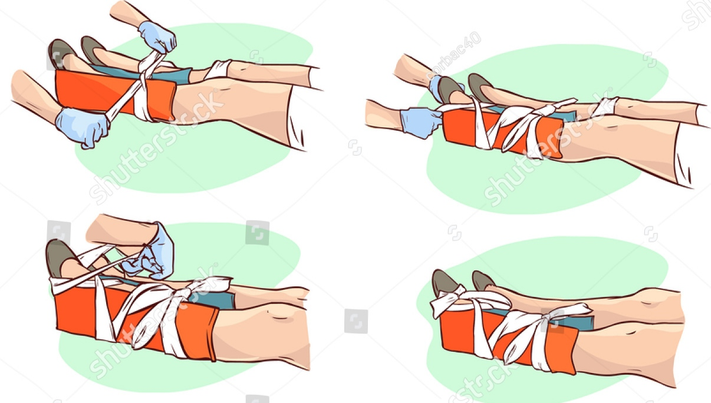

SYMPTOMS
* Joint is visibly deformed or out of place.
* Numbness or tingling at the joint.
* Swollen or discolored.
* Limited ability to move.
* Intense pain.
FIRST AID
1.Call 911 or the local emergency number before you begin treating someone who may have a dislocation,
especially if the accident that caused the injury may be life threatening.
If the person has a serious injury, check their airway, breathing, and circulation. If necessary, begin CPR, or bleeding control.
2.Do not move the person if you think that their head, back, or leg has been injured. Keep the person calm and still.
3.If the skin is broken, take steps to prevent infection. Do not blow on the wound.
4.Rinse the area gently with clean water to remove any dirt you can see, but do not scrub or probe.
Cover the area with sterile dressings before immobilizing the injured joint.
Do not attempt to put the bone back in place unless you are a bone specialist.
5.Apply a splint or sling to the injured joint in the position in which you found it.
Do not move the joint. Also immobilize the area above and below the injured area.
6.Check blood circulation around the injury by pressing firmly on the skin in the affected area.
It should turn white, then regain color within a couple of seconds after you stop pressing on it.
To reduce the risk for developing infection, do not do this step if the skin is broken.
7.Apply ice packs to ease pain and swelling, but do not put ice directly on the skin. Wrap the ice in a clean cloth.
8.Take steps to prevent shock. Unless there is a head, leg, or back injury, lay the victim flat,
elevate their feet about 12 inches (30 centimeters), and cover the person with a coat or blanket.